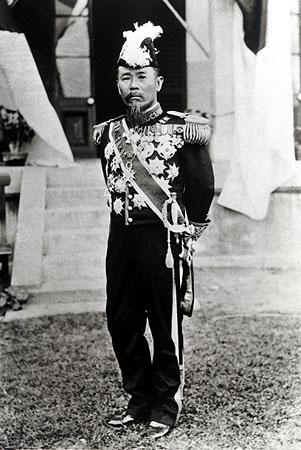
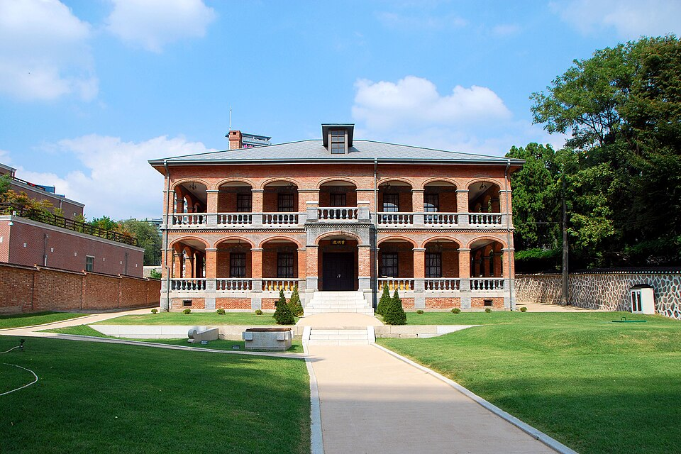

⏱️ 10초 카드 · 메이지 일본·조선 침탈 (1841~1909)
일본 초대 총리을사늑약·초대 통감하얼빈에서 처단
여는 질문 — 한 사람이 어떤 나라엔 영웅이고 다른 나라엔 가해자일 수 있을까?
이름
한국어이토 히로부미
원어伊藤博文
실제 발음이토 히로부미
로마자Itō Hirobumi
영어권Itō Hirobumi
왜 이 사람인가
이 도감에서 이토는 '입장에 따라 평가가 정반대로 갈리는 인물'의 대표예요. 일본에서는 근대 국가를 설계한 영웅, 한국에서는 국권을 빼앗은 침탈의 주역이죠. 두 평가 모두 사실에 근거해요 — 그래서 '한쪽 시선만으로 사람을 다 안다고 할 수 있을까'를 묻게 하는 인물이에요. 안중근과 짝으로 읽으면 그 질문이 가장 날카로워져요.
생애
조슈 번 출신으로, 메이지 유신을 이끈 핵심 인물이에요. 일본의 첫 내각총리대신이 되었고, 일본의 헌법을 만드는 일을 주도하며 나라를 빠르게 근대화했어요. 일본 안에서는 '근대화의 영웅'으로 불려요.
하지만 그는 우리에게는 침탈의 주역이었어요. 1905년 을사늑약을 강요하고, 대한제국의 첫 통감이 되어 국권을 빼앗는 일을 설계했지요.
1909년 만주 하얼빈역에서 안중근 의사에게 처단됩니다. 한 인물이 어떤 나라에는 영웅이고 다른 나라에는 가해자일 수 있다는 '빛과 그림자'를 가장 분명하게 보여주는 사람이에요.
자료로 보기 — 유묵·사진


남긴 말
“바보 같은 녀석이군.”
하얼빈역에서 총탄을 맞은 직후, 쏜 사람이 한국인이라는 말을 듣고 내뱉었다고 전해지는 말. · 출처: 여러 기록에 전해지는 말(전언)
“한국의 시정(施政)을 개선하여 이끈다.”
통감으로서 그가 내세운 명분 — '침탈'을 '지도·개선'으로 포장한 당시의 공식 표현이에요. · 출처: 통감부의 공식 명분(요지) — 그 말의 실상은 국권 침탈이었음
연표
- 1841출생 (조슈 번)
- 1885일본 초대 내각총리대신
- 1905을사늑약 강요 · 초대 통감 취임
- 1909하얼빈역에서 안중근 의사에게 피격
생애의 길 — 하기에서 하얼빈까지 🗺️
일본 근대화의 설계자에서 조선 침탈의 통감으로, 그리고 하얼빈의 총탄으로. 번호를 차례로 눌러 보세요.
현재 지도 위 경로예요. 일본에서 한국으로, 그리고 만주로 — 그가 움직인 길이 곧 일본 제국주의가 뻗어 간 길이었고, 그 끝에서 한 한국 청년의 총과 마주쳤어요.
빛과 그림자일본에는 근대화의 영웅, 한국에는 침탈의 주역. 같은 사람을 두고 나라마다 평가가 정반대인 이유를 함께 생각해 봐야 해요.
더 깊이 (고등·일반)
조슈의 하급 무사에서 일본 초대 총리로
이토는 조슈 번의 가난한 하급 무사 집안에서 태어났어요. 젊은 시절 영국에 몰래 유학해 서양의 힘을 직접 보고 돌아온 뒤, 메이지 유신을 이끈 핵심 인물이 됐죠. 일본의 첫 내각총리대신이 되어 메이지 헌법을 설계했고, 일본 안에서는 '근대 국가를 만든 사람'으로 기억돼요.
참고: 이토의 생애·메이지 유신 일반
을사늑약 — 외교권을 빼앗다 (1905)
러일전쟁에서 이긴 일본은 대한제국을 본격적으로 손에 넣으려 했어요. 1905년 이토는 군대로 궁을 에워싼 채 대신들을 위협해 을사늑약을 강제로 체결시켰죠. 이 조약으로 대한제국은 외교권을 빼앗기고 사실상 일본의 '보호국'이 됐어요. 고종 황제는 끝내 서명하지 않았고, 조약의 정당성은 지금도 부정돼요.
참고: 을사늑약(1905) 일반
초대 통감 — 침탈을 '설계'하다
이토는 대한제국의 첫 통감이 되어 한국의 내정을 장악해 갔어요. 흥미롭게도 그는 즉각적인 '병합'보다 보호국을 통한 점진적 지배를 주장한 편이었는데 — 그것을 '한국을 문명화하는 것'이라 포장했죠. 하지만 점진적이든 즉각적이든, 그 끝은 한 나라의 주권을 빼앗는 일이었어요. '온건한 침탈'이라는 말이 성립할 수 있는지 생각해 볼 지점이에요.
참고: 통감부·이토의 한국 정책 일반
하얼빈, 1909 — 안중근의 총
1909년 10월 26일, 이토는 만주 하얼빈역에서 안중근 의사의 총탄에 쓰러졌어요. 안중근은 그 자리에서 '대한 만세'를 외쳤고, 재판에서 이토의 죄 15가지를 또박또박 밝혔죠. 한 사람의 죽음이 두 나라에서 정반대로 기억되는 — 영웅의 최후이자 침탈자의 응징이라는 두 이야기가 같은 사건에 겹쳐 있어요.
참고: 안중근 의거(1909) 일반
두 나라의 기억 — 영웅인가 가해자인가
일본의 옛 지폐에는 이토의 얼굴이 실렸고, 한국에서 그는 침탈의 대명사예요. 같은 사람을 두고 평가가 이렇게 갈리는 건, 그가 '일본을 위해' 한 일이 곧 '한국에게 한' 일이었기 때문이죠. 이 카드의 목적은 그를 미화하는 것도, 단지 미워하는 것도 아니에요 — 역사를 볼 때 '누구의 자리에서 보느냐'가 얼마나 중요한지 깨닫는 거예요.
참고: 이토에 대한 한일 평가 차이 일반
이 인물이 나오는 이야기
더 공부하기 — 여기서 출발하세요
📚 책으로
- 이토 히로부미 평전 ↗근대 일본을 설계한 동시에 조선 침탈을 이끈 인물 — 양면을 함께 보는 전기.
- 을사늑약 1905, 한국과 일본 ↗외교권을 빼앗긴 그 조약이 어떻게 강제됐는지.
📜 1차 사료
- 을사늑약 전문 (1905) ↗대한제국의 외교권을 일본에 넘긴다는 강제 조약.
🎬 영상으로
- KBS 〈제국주의의 두 얼굴, 이토 히로부미를 사살하다〉 ↗🟢 KBS 역사 다큐 — 일본의 영웅이자 한국의 침탈자라는 '두 얼굴'을 함께 다뤄요(한국어).
📍 가 볼 곳
- 안중근 의사 기념관 (서울 남산)이토를 처단한 안중근을 기리는 곳.
- 하얼빈역 (중국) ↗1909년 의거의 현장 — 지금은 안중근 기념 공간이 있어요.